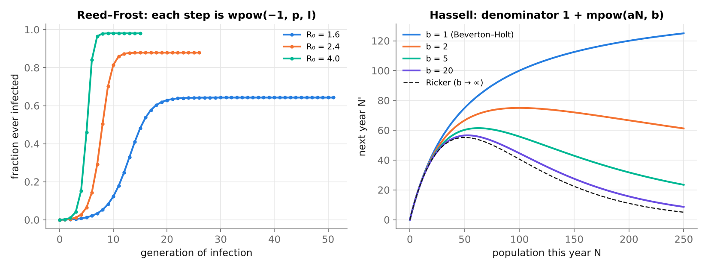

Biology series · 9 of 11
In the Reed–Frost epidemic, a susceptible's chance of infection from I infectives is wpow(−1, p, I), and independent interventions stack by the same 'or' law. The herd-immunity threshold 1 − 1/R₀ is the circle operation's (called mult-add before 1.0) inverse of R₀ − 1. Two Beverton–Holt seasons are exactly one Beverton–Holt season whose growth excess is the ∘₁ of the two. Hassell's density-dependence family is a circle operation power of the crowding.

Known or new. All textbook. Reed and Frost's chain-binomial model dates from the 1920s, the final-size relation and the herd-immunity threshold are standard epidemiology, and Beverton–Holt (1957), Hassell (1975), Ricker and the Levins metapopulation are standard population ecology. The page places them; it does not add to them.
Is there a lead worth following? None. Every placement is exact and proved, but each is either the 'or' law or a plain ∘₁ on growth factors, and none suggests a measurement.
In the Reed–Frost chain-binomial model each infective independently infects a given susceptible with chance p, so the susceptible escapes I infectives with (1 − p)I and is infected with
In 2,000 people with R₀ = 4 the chain infects 98.0% of the population, matching the final-size relation 1 − z = e−R₀z. Interventions that each cut transmission independently, say by 40% and 30%, cut it by 40% ∘₋₁ 30% = 58% together. The herd-immunity threshold 1 − 1/R₀ is −inv(R₀ − 1), so at R₀ = 3 it is two-thirds, and four independent 25% interventions are the fewest that reach it.
Beverton–Holt's N' = RN/(1 + N/M) is closed under composition: a season with (R₁, M₁) followed by one with (R₂, M₂) is a single season with
and the room left below carrying capacity, K/N − 1, shrinks by exactly 1/R each generation. Hassell's N' = λN/(1 + aN)b has denominator 1 + mpow(aN, b): b = 1 is Beverton–Holt's contest competition, and with a·b held fixed and b large it becomes Ricker's scramble, e−cN.
The chance of dying across several age classes is the 'or' fold of the per-class mortalities, and in the Levins metapopulation an empty patch with n occupied neighbours is colonised with wpow(−1, c, n). These are the same law as release sites and load on the neuroscience and evolution pages.
| Place | What the circle operation does there | Known since | Verdict |
|---|---|---|---|
| Reed–Frost | Infection chance wpow(−1, p, I) | Reed and Frost, 1920s | Exact, known |
| Interventions, herd immunity | 'Or' law; threshold = −inv(R₀ − 1) | Standard epidemiology | Exact, known |
| Beverton–Holt seasons | Compose into one; growth excesses by ∘₁ | Beverton and Holt 1957 | Exact, known |
| Hassell family | Denominator 1 + mpow(aN, b) | Hassell 1975 | Relabelling |
| Survivorship, Levins | 'Or' folds | Textbook | Relabelling |
File biology/09-population/lean/Population.lean, core Lean 4.37 with no mathlib, built on the shared library's base and using ∘₁ for the circle operation. Every theorem uses only Lean's standard axioms. It goes into the shared proof library as FusedAlgebra/Topics/Biology/Population.lean.
bh_compose, bh_room, hassell, hassell_one, herd_threshold, interventions, levins, reed_frost, seasons_growth, star_def, survival, survival_assoc
Numeric checks: 11 of 11 pass, from checks.py beside this page.
Everything here is simulated or algebraic; no measured data. Citations and dates are from memory and I did not open them.